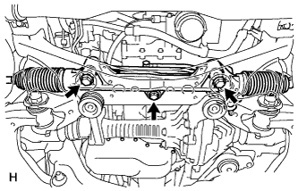
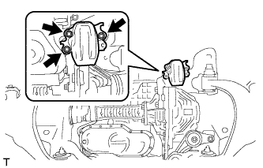
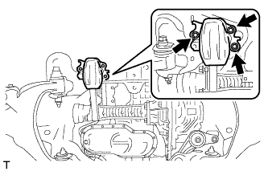
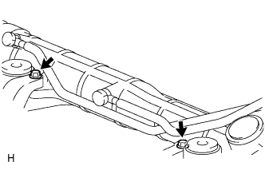
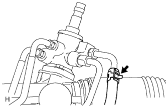
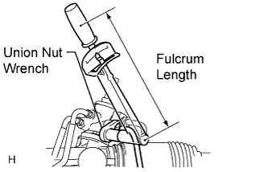
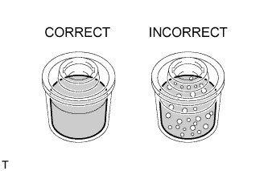
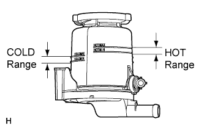
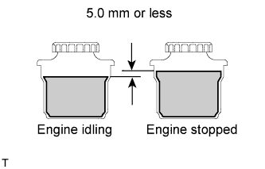

STEERING LINKAGE > INSTALLATION |
| 1. INSTALL POWER STEERING LINK ASSEMBLY |
 |
Install the power steering link with the 3 bolts and 3 nuts.
| 2. INSTALL FRONT SUSPENSION REBOUND STOPPER SUB-ASSEMBLY LH |
 |
Install the suspension rebound stopper LH with the 3 bolts.
| 3. INSTALL FRONT SUSPENSION REBOUND STOPPER SUB-ASSEMBLY RH |
 |
Install the suspension rebound stopper RH with the 3 bolts.
| 4. CONNECT PRESSURE FEED TUBE ASSEMBLY |
 |
Install the pressure feed tube clamp with the 2 bolts.
 |
Connect the pressure feed tube (return tube side) to the power steering link with the clamp.
 |
Using a union nut wrench, connect the pressure feed tube (pressure feed tube side) to the power steering link.
| 5. INSTALL TIE ROD END SUB-ASSEMBLY LH |
Align the matchmarks of the tie rod and rack end, and temporarily install the tie rod with the lock nut.
Check that length A is the same as the length measured previously.
| 6. INSTALL TIE ROD END SUB-ASSEMBLY RH |
| 7. CONNECT TIE ROD END SUB-ASSEMBLY LH |
Connect the tie rod end LH to the steering knuckle with the nut.
Install a new cotter pin.
| 8. CONNECT TIE ROD END SUB-ASSEMBLY RH |
| 9. CONNECT NO. 2 STEERING INTERMEDIATE SHAFT |
for Manual Tilt and Telescopic:
Connect the No. 2 steering intermediate shaft (Click here).
for Power Tilt and Power Telescopic:
Connect the No. 2 steering intermediate shaft (Click here).
| 10. TEMPORARILY INSTALL FRONT STABILIZER BAR |
w/ KDSS:
Temporarily install the stabilizer bar (Click here).
w/o KDSS:
Temporarily install the stabilizer bar (Click here).
| 11. TEMPORARILY INSTALL FRONT STABILIZER LINK ASSEMBLY LH |
w/ KDSS:
Temporarily install the stabilizer link (Click here).
w/o KDSS:
Temporarily install the stabilizer link (Click here).
| 12. TEMPORARILY INSTALL FRONT STABILIZER LINK ASSEMBLY RH |
| 13. INSTALL ENGINE ASSEMBLY |
for 2UZ-FE:
Install the engine (Click here).
for 1GR-FE:
Install the engine (Click here).
for 1VD-FTV:
Install the engine (Click here).
| 14. TIGHTEN FRONT NO. 1 STABILIZER BRACKET LH |
w/ KDSS:
Tighten the stabilizer bracket (Click here).
w/o KDSS:
Tighten the stabilizer bracket (Click here).
| 15. TIGHTEN FRONT NO. 1 STABILIZER BRACKET RH |
| 16. STABILIZE SUSPENSION |
Install the front wheels.
Lower the vehicle.
Press down on the vehicle several times to stabilize the suspension.
| 17. TIGHTEN FRONT STABILIZER LINK ASSEMBLY LH |
w/ KDSS:
Tighten the stabilizer link (Click here).
w/o KDSS:
Tighten the stabilizer link (Click here).
| 18. TIGHTEN FRONT STABILIZER LINK ASSEMBLY RH |
| 19. TIGHTEN FRONT STABILIZER BAR |
w/ KDSS:
Tighten the front stabilizer bar (Click here).
w/o KDSS:
Tighten the front stabilizer bar (Click here).
| 20. BLEED POWER STEERING FLUID |
Check the fluid level.
Jack up the front of the vehicle and support it with stands.
Turn the steering wheel.
With the engine stopped, turn the wheel slowly from lock to lock several times.
Lower the vehicle.
Start the engine.
Idle the engine for a few minutes.
Turn the steering wheel.
With the engine idling, turn the wheel left or right to the full lock position and keep it there for 2 to 3 seconds, then turn the wheel to the opposite full lock position and keep it there for 2 to 3 seconds. *1
Repeat *1 several times.
Stop the engine.
 |
Check for foaming or emulsification.
If the system has to be bled twice because of foaming or emulsification, check for fluid leaks in the system.
Check the fluid level.
| 21. CHECK POWER STEERING FLUID LEVEL |
 |
Keep the vehicle horizontal.
With the engine stopped, check the fluid level in the reservoir.
If necessary, add fluid.
Start the engine and idle it.
Turn the steering wheel from lock to lock several times to raise the fluid temperature.
Check for foaming or emulsification.
If foaming or emulsification is identified, bleed the power steering system.
 |
With the engine idling, measure the fluid level in the reservoir.
Stop the engine.
Wait a few minutes and remeasure the fluid level in the reservoir.
Check the fluid level.
| 22. CHECK FOR POWER STEERING FLUID LEAK |
| 23. INSTALL FRONT WHEELS |
| 24. PLACE FRONT WHEELS FACING STRAIGHT AHEAD |
| 25. ADJUST FRONT WHEEL ALIGNMENT |
Adjust the front wheel alignment (Click here).
| 26. ADJUST HEADLIGHT ASSEMBLY |
for Standard Headlight:
Adjust the headlight (Click here).
for HID Headlight:
Adjust the headlight (Click here).
| 27. CLOSE STABILIZER CONTROL WITH ACCUMULATOR HOUSING SHUTTER VALVE |
Using a 5 mm hexagon socket wrench, tighten the lower and upper chamber shutter valves of the stabilizer control with accumulator housing.